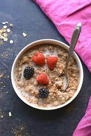

Protien Oats

Ingredients:
- 1/2 cup rolled oats
- 1 cup milk (or water)
- 1 scoop protein powder (flavor of your choice)
- 1 tablespoon honey or maple syrup
- Optional toppings: sliced fruits, nuts, seeds, or nut butter
Steps to Make:
- In a saucepan, combine rolled oats and milk (or water) and bring to a simmer over medium heat.
- Once simmering, reduce heat and cook for about 5 minutes, stirring occasionally until oats are cooked and the mixture thickens.
- Remove from heat and stir in the protein powder and sweetener until well combined.
- Transfer to a bowl and add optional toppings such as sliced fruits, nuts, seeds, or nut butter.
- Serve warm and enjoy your protein-packed oats!